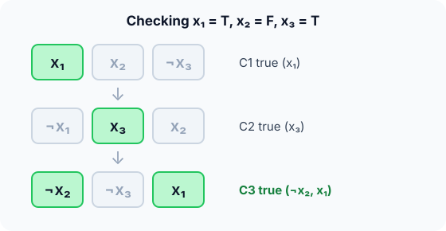

Prerequisites
- Big-O notation and polynomial versus exponential time.
- Backtracking: exhaustive search with pruning.
- Boolean logic: AND (∧), OR (∨), NOT (¬).
The analogy
Everyday analogy
Think of a jigsaw puzzle: checking that a finished puzzle is correct takes a glance, but assembling it from a pile of pieces takes hours.
NP problems are like that: a proposed answer is quick to verify, but nobody knows a quick way to find one. NP-complete problems are the hardest of them: solve any one fast, and you could solve them all fast.
How it works
Key words: P: solvable in polynomial time. NP: a proposed solution can be checked in polynomial time. NP-complete: in NP, and every NP problem reduces to it.
Start with a 3-SAT check by hand
Clauses: C1 = (x₁ ∨ x₂ ∨ ¬x₃), C2 = (¬x₁ ∨ x₃ ∨ x₂), C3 = (¬x₂ ∨ ¬x₃ ∨ x₁). A clause is true if at least one literal is true. Try x₁ = T, x₂ = F, x₃ = T. Predict, then open "Check".
Example: predict before you read
Step 1. Evaluate C1. Predict whether it is true and which literal makes it so.
Check
True: x₁ is true. (x₂ is false and ¬x₃ is false.)
Step 2. Cover the next line and guess: C2 and C3?
Check
C2 is true thanks to x₃. C3 is true thanks to ¬x₂ (and x₁).
Step 3. So is the formula satisfiable, and how long did checking take?
Check
Yes, all three clauses are true. Checking took one look per literal: 9 checks, linear in the formula's size.

Quick recall: Before reading further, cover the text above and say out loud: what is the difference between P and NP?
Check your answer
P problems can be solved in polynomial time; NP problems can have a proposed answer checked in polynomial time.
Finish the picture: the reduction idea
To show a new problem X is NP-complete, show X is in NP, then translate 3-SAT into X in polynomial time.
- Direction of the translation. Predict: do you turn 3-SAT into X, or X into 3-SAT?
Check
3-SAT into X. Then a fast solver for X would solve 3-SAT fast, so X is at least as hard as 3-SAT.
- 3-SAT → Clique (sketch). Predict how a formula with $m$ clauses becomes a graph question.
Check
Make one vertex per literal in each clause, and join compatible literals in different clauses (not x and ¬x). The formula is satisfiable exactly when the graph has a clique of size $m$, one true literal per clause.
Quick recall: Without scrolling up, say out loud: if problem A reduces to problem B, which one is "at least as hard"?
Check your answer
B. A fast algorithm for B would give a fast algorithm for A, by translating A's instances into B's.
The rule in plain words
Show a problem is in NP by giving a fast checker for proposed solutions.
Show it is NP-hard by reducing a known NP-complete problem (such as 3-SAT) to it in polynomial time. Both together make it NP-complete.
Quick recall: Before you read the code, describe how to check a 3-SAT assignment, in your own words. Then check below.
Check your answer
For each clause, look at its three literals; if none is true under the assignment, the formula is false. If every clause has a true literal, it's satisfied.
The code
Read this code after you have checked the formula by hand. It will make more sense.
int satisfies(int clause[][3], int m, int x[]) { /* literal +i = x_i, -i = not x_i */
for (int j = 0; j < m; j++) {
int ok = 0;
for (int k = 0; k < 3; k++) {
int lit = clause[j][k], v = x[lit > 0 ? lit : -lit];
if ((lit > 0 && v) || (lit < 0 && !v)) ok = 1; /* this literal is true */
}
if (!ok) return 0; /* a clause with no true literal */
}
return 1; /* polynomial-time check: in NP */
}int brute_force_sat(int clause[][3], int m, int n, int x[]) { /* tries all 2^n */
for (int mask = 0; mask < (1 << n); mask++) {
for (int i = 1; i <= n; i++) x[i] = (mask >> (i - 1)) & 1;
if (satisfies(clause, m, x)) return 1;
}
return 0;
}Definition
What you just did, in one line: a problem is NP-complete if proposed solutions can be checked in polynomial time (it is in NP) and every problem in NP can be reduced to it in polynomial time (it is NP-hard). 3-SAT was among the first proved NP-complete.
flowchart LR
A["3-SAT formula"] -->|"polynomial-time translation"| B["Clique instance"]
B --> C["hypothetical fast Clique solver"]
C -->|"yes / no"| D["answer for the formula"]
How fast is it?
Quick recall: Before looking at the formula, predict: how many assignments must brute force try for 50 variables?
Check your answer
$2^{50} \approx 10^{15}$: about 30 years at a million checks per second.
Checking an assignment is linear in the formula; brute-force solving tries every assignment of $n$ variables:
$$\text{check} = O(m), \qquad \text{brute force} = O(2^n \cdot m)$$Nobody knows a polynomial-time algorithm for 3-SAT, and nobody has proved one can't exist: that is the P versus NP question.
| Class | Meaning | Examples |
|---|---|---|
| P | Solvable in polynomial time | Sorting, shortest paths, MST |
| NP | A solution can be checked in polynomial time | Everything in P, plus SAT, Sudoku |
| NP-complete | In NP and every NP problem reduces to it | 3-SAT, Clique, graph colouring, TSP (decision version) |
| NP-hard | At least as hard as NP-complete; may not be in NP | TSP (optimisation version), halting problem |
Warning
NP does not mean "not polynomial". It means "nondeterministic polynomial": checkable in polynomial time. Every problem in P is also in NP.
Exam tip
For a reduction question, state the direction clearly: "to prove X is NP-hard, reduce a known NP-complete problem to X". Reducing X to 3-SAT proves nothing about X's hardness.
Common mistakes
- Reducing in the wrong direction (new problem → 3-SAT).
- Saying NP-complete problems "can't be solved"; they can, just (as far as we know) not in polynomial time.
- Confusing NP-complete with NP-hard: NP-hard problems need not be in NP.
Try it yourself
Exercise 1 (warm-up)
Is the 3-SAT formula (x₁ ∨ x₁ ∨ x₁) ∧ (¬x₁ ∨ ¬x₁ ∨ ¬x₁) satisfiable?
Hint
Try both values of x₁.
Answer
No. x₁ = T makes the second clause false; x₁ = F makes the first false.
Exercise 2 (a bit harder)
Sudoku generalised to $n^2 \times n^2$ boards is NP-complete. Explain in two sentences why it is in NP, and what a polynomial-time algorithm for it would imply. Write your answer down before you open it.
Show answer
Given a filled board, checking every row, column and box takes polynomial time, so it is in NP. A polynomial-time Sudoku solver would, through reductions, give polynomial-time algorithms for every NP problem, proving P = NP.
Did you know?
Did you know?
In 1971 Stephen Cook proved that SAT is NP-complete; a year later Richard Karp showed 21 classic problems are NP-complete too. P versus NP is one of the seven Millennium Prize problems, worth one million dollars.
Modern SAT solvers handle formulas with millions of variables from chip verification and planning, because real-world instances are usually far easier than the worst case.
Key points to remember
If you remember one thing from each line, remember the because.
- 3-SAT is in NP because checking an assignment takes one pass over the clauses.
- Brute force is exponential because $n$ variables have $2^n$ assignments.
- Reductions show hardness because a fast solver for the target would give a fast solver for the source.
- All NP-complete problems stand or fall together because each reduces to every other.
- P ⊆ NP because if you can solve a problem fast, you can check an answer by solving it.
Self-check questions
Answer these in order, out loud. They follow the page, so your answers become the script of your video.
- How is NP like a jigsaw puzzle?
Sample answer
Checking a finished puzzle is quick, but putting it together from scratch can take very long; NP problems are quick to check, with no known quick way to solve.
- Check the assignment x₁ = T, x₂ = F, x₃ = T on the three clauses.
Sample answer
C1 is true via x₁, C2 via x₃, C3 via ¬x₂, so the formula is satisfied.
- Why does
satisfiesreturn 0 as soon as one clause has no true literal?A good answer says how clauses are combined.
Sample answer
The clauses are joined by AND, so a single false clause makes the whole formula false; there's no need to check the rest.
- So what does NP-complete mean, in one sentence?
Sample answer
A problem whose solutions can be checked in polynomial time, and to which every problem in NP can be reduced in polynomial time.
- Why does a reduction from 3-SAT to X show that X is hard?
A good answer imagines a fast solver for X.
Sample answer
If X had a fast solver, you could translate any 3-SAT formula into X quickly and solve it, which would make 3-SAT, and hence all of NP, fast.
- What do checking and brute-force solving cost for 3-SAT?
Sample answer
Checking is $O(m)$ for $m$ clauses; brute force is $O(2^n \cdot m)$ for $n$ variables.
- What do you do in practice when a problem is NP-complete?
Sample answer
Use approximation algorithms, heuristics, solvers tuned for real instances, or exact methods only on small inputs.
- If you had to teach this to a friend in 2 minutes, what would you leave out, and why?
Sample answer
I'd leave out the clique construction and NP-hard versus NP-complete. I'd keep the jigsaw analogy, the 3-SAT check, and "easy to check, no known fast way to solve; reductions show hardness".
External resources
- Wikipedia: NP-completeness: definitions, history and examples.
- Wikipedia: P versus NP problem: the open question and its consequences.
- MIT OCW 6.046J: lectures on complexity and reductions.
Videos
- YouTube search: P vs NP explained: pick an accessible introduction.